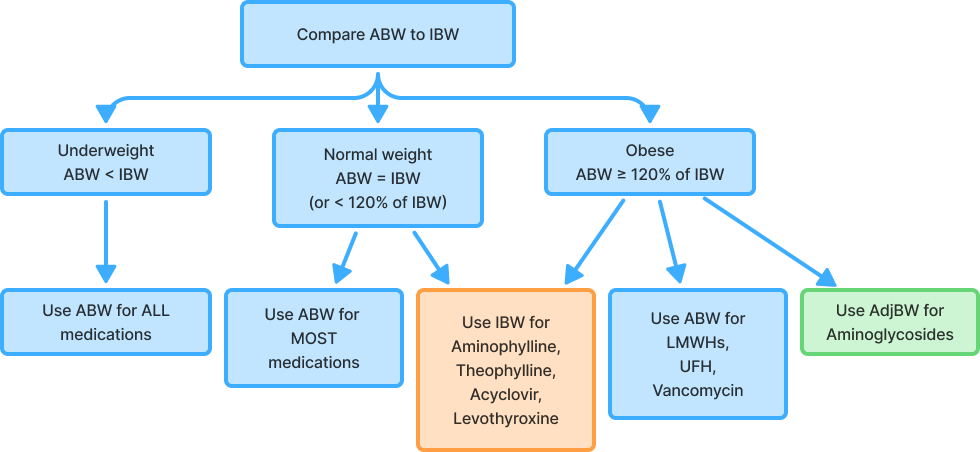
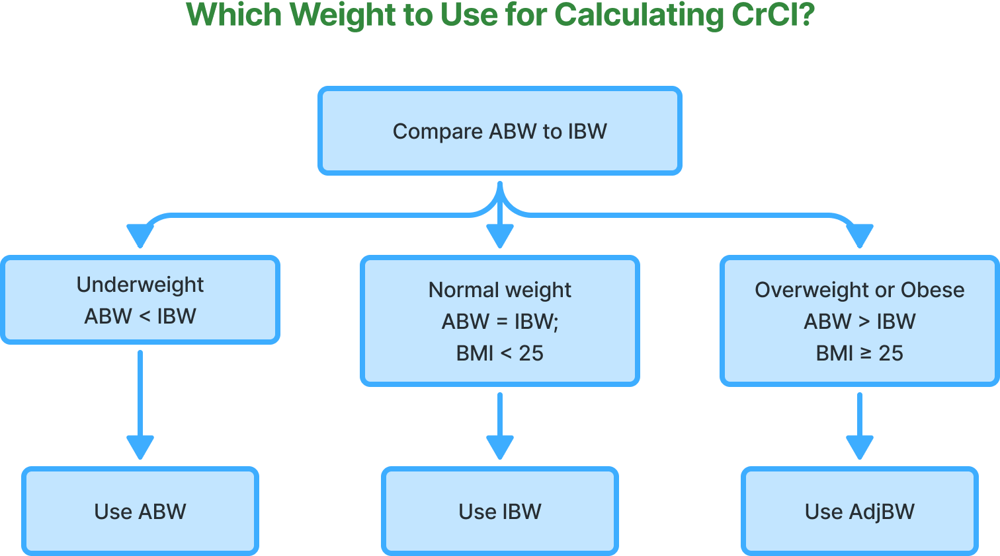

In this module, you will:
Click the title to view the tutorial
Actual weight measured on a scale.
Estimated healthy body weight based on height and gender.
Used for dosing in obese patients when TBW significantly exceeds IBW.
BMI = Weight (kg) [Height (m)]²
OR BMI = Weight (lbs) × 703 [Height (inches)]²
| BMI Category | BMI Range |
|---|---|
| Underweight | < 18.5 |
| Normal | 18.5 – 24.9 |
| Overweight | 25 – 29.9 |
| Obese | ≥ 30 |
Males: IBW = 50 + 2.3 x (inches over 5 ft)
Females: IBW = 45.5 + 2.3 x (inches over 5 ft)
AdjBW0.4 = IBW + 0.4 x (TBW - IBW)

A 45-year-old female is admitted with sepsis. She is 5′6″ tall and weighs 175 lb. She is to receive a loading dose of vancomycin at 25 mg/kg.
Hint: Vancomycin dosing is based on total body weight (TBW), even in obese patients.
What dose should she receive? Round to the nearest 250 mg, and do not exceed 2000 mg.
TBW = 175 lb ÷ 2.2 = 79.5 kg
IBW = 45.5 + (2.3 × 6) = 59.3 kg
TBW/IBW = 79.5 / 59.3 = 1.34 → she is 134% of her IBW → Obese, but vancomycin uses TBW
Dose = 25 mg/kg × 79.5 kg = 1987.5 mg → round to 2000 mg
Final Answer: 2000 mg
A female patient is prescribed theophylline 5 mg/kg/day. She is 5′7″ and weighs 243 lb.
Hint: For theophylline, use IBW in obese patients.
What is her daily dose? Round to the nearest whole mg.
TBW = 243 ÷ 2.2 = 110.5 kg
IBW = 45.5 + (2.3 × 7) = 61.6 kg
TBW/IBW = 110.5 / 61.6 = 1.79 → Obese, so use IBW
Dose = 5 mg/kg × 61.6 kg = 308 mg/day
Final Answer: 308 mg/day
A 34-year-old male (6′7″, 287 lb) is prescribed tobramycin 2 mg/kg IV Q8H for a serious infection.
Hint: For aminoglycosides like tobramycin, use AdjBW if the patient is obese.
What dose should he receive? Round to the nearest 10 mg.
TBW = 287 ÷ 2.2 = 130.5 kg
IBW = 50 + (2.3 × 19) = 93.7 kg
TBW/IBW = 130.5 / 93.7 = 1.39 → he is 139% of his IBW or 39% above his IBW → obese, so use AdjBW
AdjBW = 93.7 + 0.4 × (130.5 − 93.7) = 108.4 kg
Dose = 2 mg/kg × 108.4 kg = 216.8 mg → round to 220 mg IV Q8H
Final Answer: 220 mg IV Q8H
Male: CrClmale = (140 – Age) × Weight in kg 72 × SCr
Female: CrClfemale = 0.85 × CrClmale = 0.85 × (140 – Age) × Weight in kg 72 × SCr

Depending on institutional policy and clinical context, the following considerations may apply:
A 64-year-old female (5′5″, 205 lb) is hospitalized with nosocomial pneumonia and is receiving ciprofloxacin, Primaxin, and vancomycin. Morning labs: K 4 mEq/L, BUN 60 mg/dL, SCr 2.7 mg/dL, glucose 222 mg/dL.
Based on the renal dosing table below, what is the correct Primaxin dose for this patient?
| CrCl | ≥ 71 mL/min | 41 - 70 mL/min | 21 - 40 mL/min | 6 - 20 mL/min |
|---|---|---|---|---|
| Primaxin Dose | 500 mg IV Q6H | 500 mg IV Q8H | 250 mg IV Q6H | 250 mg IV Q12H |
BMI = 205/65² × 703 = 34.1 kg/m²; obese → so use AdjBW for CrCl
TBW = 205 ÷ 2.2 = 93.18 kg
IBW = 45.5 kg + (2.3 × 5 in) = 57 kg
AdjBW0.4 = 57 + 0.4 × (93.18 - 57) = 71.47 kg
CrCl = 0.85 × (140 – 64) × 71.47 72 × 2.7 = 23.75 mL/min
CrCl = 23.75 mL/min falls in the 21-40 mL/min range
The dose is 250 mg IV Q6H
BSA (m²) = Weight (kg) × Height (cm) 3600
OR
BSA (m²) = Weight (lbs) × Height (in) 3131
BSA is primarily used for chemotherapy and pediatric dosing.
A breast cancer regimen includes doxorubicin 30 mg/m²/day for 3 days. How much should a patient who is 5′6″ (167.6 cm) and 144 lb (65.5 kg) receive per day?
Wt = 144 lb × 1 kg/2.2 lb = 65.5 kg
Ht = 66 inches × 2.54 cm/1 inch = 167.6 cm
BSA = √(65.5 × 167.6)/3600 = 1.74 m²
Dose = 30 mg/m²/day × 1.74 m² = 52.2 mg/day
Final Answer: 52.2 mg/day